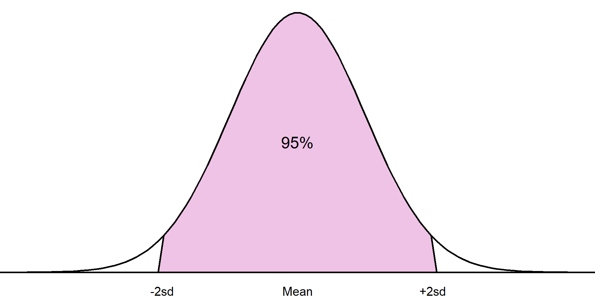
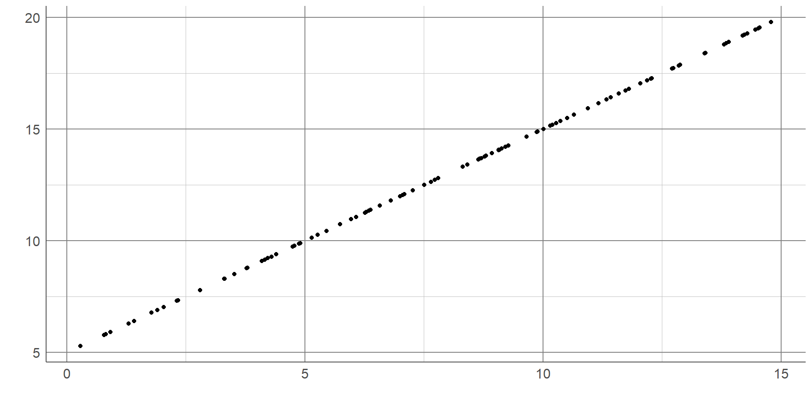

Research questions
and biases
Research questions
One of the most important parts of statistical analysis
Should be formulated before any data collection or analysis carried out
Must be clear, answerable, and concise
Often not formally documented but helps develop an analysis plan
Research questions
All research questions must contain a target population and an outcome
Often questions contain comparison groups, these must also be fully defined
Can be helpful to use PICO approach
PICO approach
Population
Intervention (group 1)
Comparison (group 2)
Outcome
Example research question
Does a plant-based diet reduce cholesterol levels in obese adults?
Example research question
Does a plant-based diet reduce cholesterol levels in obese adults?
Example research question
Does a plant-based diet reduce cholesterol levels in obese adults?
Population: Obese adults
Example research question
Does a plant-based diet reduce cholesterol levels in obese adults?
Population: Obese adults
People aged 18 or over
Example research question
Does a plant-based diet reduce cholesterol levels in obese adults?
Population: Obese adults
People aged 18 or over with a BMI over 30
Example research question
Does a plant-based diet reduce cholesterol levels in obese adults?
Population: People aged 18 or over with a BMI over 30
Example research question
Does a plant-based diet reduce cholesterol levels in obese adults?
Population: People aged 18 or over with a BMI over 30
Intervention: Plant-based diet
Comparison: Standard diet (control group)
Example research question
Does a plant-based diet reduce cholesterol levels in obese adults?
Population: People aged 18 or over with a BMI over 30
Intervention: Plant-based diet
Comparison: Standard diet (control group)
Example research question
Does a plant-based diet reduce cholesterol levels in obese adults?
Population: People aged 18 or over with a BMI over 30
Intervention: Plant-based diet
Comparison: Standard diet (control group)
Outcome: Difference in cholesterol level
Biases
Almost all data and analyses will have some kind of bias included
Important to consider before analysis plan decided
Can arise at data collection, analysis, interpretation, and communication stages
Selection bias
Individuals more likely to be included in sample than others
Sample no longer random, cannot make inferences about target population
Recall bias
Participants asked to recall past events or experiences
Accuracy and completeness will differ
Not always trustworthy
Confirmation bias
Choosing to analyse or interpret data based on pre-conceived ideas
Inherent to human brains
Identify potential expectations before looking at data
Missing data
Missing data = holes in the dataset
Something we intended to collect but have not
Very common, not always obvious
Potential source of bias
Examples of missing data
- Questionnaires not complete as some questions are considered too personal by participants
- Blood samples are dropped in a lab, losing the results, leaving holes in the data
- User information collected from a mobile phone app includes location data for some but is missing for others who opted-out of sharing this data
Missing data
Impossible to truly know the reason for and impact of missing data
Best way to overcome missing data is to not have any!
Important to consider potential biases introduced by missing data and account for them in analysis
Be transparent when reporting missing data
Summarising data
Allows us to explore and quantify aspects of the sample
Can not be used to answer research question unless all information on target population is collected
Choice of summary depends on type of variable, distribution of data, and property we wish to quantify
Introducing the Palmer penguins

Artwork by @allison_horst
Introducing the Palmer penguins
| Gentoo |
Biscoe |
45.8 |
14.6 |
210 |
4200 |
female |
2007 |
| Adelie |
Biscoe |
41.0 |
20.0 |
203 |
4725 |
male |
2009 |
| Adelie |
Dream |
36.4 |
17.0 |
195 |
3325 |
female |
2007 |
| Adelie |
Dream |
39.0 |
18.7 |
185 |
3650 |
male |
2009 |
| Gentoo |
Biscoe |
45.1 |
14.5 |
215 |
5000 |
female |
2007 |
| Adelie |
Dream |
39.6 |
18.8 |
190 |
4600 |
male |
2007 |
Summarising categorical variables
Describe the distribution of observations between categories:
- Proportion (0 → 1)
- Percentage (0 → 100%)
- Rate (0 → ∞)
Can use count but does not account for overall sample size
Summarising categorical variables
Example: the distribution of penguins between species in the sample data.
Total number of penguins in the sample: 344
Total number of Adelie penguins: 152
Proportion: 152 \(\div\) 344 = 0.4419
Percentage: 0.4419 \(\times\) 100% = 44.19%
Rate: 0.4419 \(\times\) 10,000 = 4419 per 10,000 penguins.
Summarising numeric variables
Summarised using the centre (average) and spread of sample
Choice of summary depends on the distribution of variable
Measure of centre
When data are normally distributed, centre is given using the mean
Represents the peak of a normal distribution
Sum of the sample values, divided by the sample size
Measure of centre
Take a random sample of 10 penguins from our data and measure their bill length (in mm):
42.9, 50.1, 39.6, 48.6, 55.1, 46.6, 50.7, 33.5, 49, 46.5
Measure of centre
Find the mean bill length:
42.9 + 50.1 + 39.6 + 48.6 + 55.1 + 46.6 + 50.7 + 33.5 + 49 + 46.5
= 462.6mm
Measure of centre
Find the mean bill length:
462.6 \(\div\) 10 = 46.26mm
Measure of center
Where data are not normal, use median instead
Order sample from smallest to largest, select middle value
Uses less information than mean (less powerful) but always valid
Measure of centre
To find the median, first order bill lengths smallest to largest:
42.9, 50.1, 39.6, 48.6, 55.1, 46.6, 50.7, 33.5, 49, 46.5
Measure of centre
To find the median, first order bill lengths smallest to largest:
33.5, 39.6, 42.9, 46.5, 46.6, 48.6, 49, 50.1, 50.7, 55.1
Measure of centre
The median is the middle value
33.5, 39.6, 42.9, 46.5, 46.6, 48.6, 49, 50.1, 50.7, 55.1
Measure of centre
Median is between 46.6mm and 48.6mm.
Middle value: (46.6 + 48.6) \(\div\) 2 = 47.6mm
Measure of centre
Before choosing summary, use a histogram to check distribution
When data are normally distributed, mean uses more of the data and gives centre of the sample
When data are skewed, mean is influenced by extreme values and longer tail
When data are normal, mean and median will be equal
Measure of spread
Measures how wide or narrow a sample is
Simplest measure is the range
Either given as the smallest and largest values or the difference between these
Measure of spread
Find the range of the 10 penguins’ bill lengths:
42.9, 50.1, 39.6, 48.6, 55.1, 46.6, 50.7, 33.5, 49, 46.5
Measure of spread
Find the range of the 10 penguins’ bill lengths:
33.5, 39.6, 42.9, 46.5, 46.6, 48.6, 49, 50.1, 50.7, 55.1
Measure of spread
Find the range of the 10 penguins’ bill lengths:
33.5 , 39.6, 42.9, 46.5, 46.6, 48.6, 49, 50.1, 50.7, 55.1
Measure of spread
Range is either given as two values: 33.5mm, 55.1mm
Or as the difference between these: 55.1 - 33.5 = 21.6mm
Measure of spread
Range only uses most extreme values, loses lots of information
Interquartile range (IQR): the range of the middle 50%
Lower quartile: 25th percentile, 25% of sample lies below
Upper quartile: 75th percentile, 75% of sample lies below
Measure of spread
Find the IQR of the 10 penguins’ bill lengths:
33.5, 39.6, 42.9, 46.5, 46.6, 48.6, 49, 50.1, 50.7, 55.1
Measure of spread
Find the upper and lower quartile:
33.5, 39.6, 42.9, 46.5, 46.6, 48.6, 49, 50.1, 50.7, 55.1
Measure of spread
Find the upper and lower quartile:
33.5, 39.6, 42.9, 46.5, 46.6, 48.6, 49, 50.1, 50.7, 55.1
Measure of spread
Find the upper and lower quartile:
33.5, 39.6, 42.9, 46.5, 46.6, 48.6, 49, 50.1, 50.7, 55.1
Measure of spread
IQR is either given as 2 values: 42.9mm, 50.1mm
Or as the difference between these: 50.1 - 42.9 = 7.2mm
Measure of spread
IQR is still discarding most of the sample
If sample is normally distributed, can use the standard deviation (SD)
Average difference between observations and the mean
Bigger SD → wider, flatter curve
Smaller SD → narrower, taller curve

Normal distribution
Normal distribution completely defined by the mean (peak) and SD (spread)

Normal distribution
Approximately 68% of the sample will lie within 1 standard deviation of the mean

Normal distribution
Approximately 95% of the sample will lie within 2 standard deviations of the mean

Normal distribution
Mean and SD can be used to check normal distribution assumption
Normal distribution
Mean and SD can be used to check normal distribution assumption
Mean SFA: 37.37
SD SFA: 78.38
If the data was normally distributed, 95% of the sample would lie between 37.37 \(\pm\) 2 \(\times\) 78.38
= -119.39, 194.13
Summarising numeric variables
Most appropriate summary depends on distribution (normal or not)
If normally distributed, use mean and SD
If not, these are invalid, use median and IQR
Mean and SD can be used to check normal distribution even without the full sample
Quantifying differences and
trends in a sample.
Quantifying differences and trends
Most appropriate choice depends on intention, type of outcome, nature of the relationship
- Comparison of variable between groups
- Investigating trends over time
- Relationship between numeric variables
Comparing categorical outcomes
Compare summary statistics (proportions, percentages, or rates) between groups
Absolute difference: Subtract values
Relative difference: Divide values
Comparing categorical outcomes
| Adelie |
146 |
73 (50%) |
73 (50%) |
| Gentoo |
119 |
58 (48.74%) |
61 (51.26%) |
Absolute difference: 50% - 48.74% = 1.26%
The absolute difference between Adelie and Gentoo penguins is 1.26 percentage points.
Comparing categorical outcomes
| Adelie |
146 |
73 (50%) |
73 (50%) |
| Gentoo |
119 |
58 (48.74%) |
61 (51.26%) |
Relative difference: 50% \(\div\) 48.74% = 1.03
There were 1.03 times more female penguins in the Adelie group than the Gentoo penguin group
No difference would = 1
Comparing categorical outcomes
| Adelie |
146 |
73 (50%) |
73 (50%) |
| Gentoo |
119 |
58 (48.74%) |
61 (51.26%) |
Relative difference: 48.74% \(\div\) 50% = 0.97
There were 0.97 times the percentage of female penguins in the Gentoo group than the Adelie penguin group
Less than 1: a reduction
Comparing numeric outcomes
Compare measures of centre/average (mean or median) between groups
Most appropriate depends on distribution of sample in each group
Requires a histogram per group
Comparing numeric outcomes
Comparing numeric outcomes
Neither the female nor the male group have a normal distribution → compare medians.
Median body mass of female penguins: 3650g
Median body mass of male penguins: 4300g
Average difference in body mass: -650g
Female penguins were 650g lighter on average compared to male penguins in this sample
Comparing variables over time
Visualised using line graph
Common comparisons: absolute difference, relative difference, or percentage change
Choice depends on intention, interpretation differs

Comparing variables over time
Absolute difference: 1,841,000 - 1,239,000 = 602,000
There were 602,000 less violent crimes reported in 2020 compared to 2010
Relative difference: 1,841,000 ÷ 1,239,000 = 1.486
There were 1.486 times more violent crimes reported in 2010 compared to 2020
Comparing variables over time
The percentage change can also be found by converting the relative difference
Compare relative difference to no difference: 1.486 - 1 = 0.486
Convert the proportion change to percentage: 0.486 x 100%
= 48.6%
There were 48.6% more violent crimes reported in 2010 than 2020
Comparing variables over time
Percentage reduction found in similar way
Relative difference: 1,239,000 ÷ 1,841,000 = 0.673
Compare to no difference: 1 - 0.673 = 0.327 (32.7%)
There were 32.7% fewer violent crimes reported in 2020 than 2010
Relationship between numeric variables
Scatterplot used to visualise trends
Strength of relationship quantified using correlation coefficients
Choice of coefficients depends on if trend is linear or not
- Linear trend: Pearson’s correlation coefficient
- Nonlinear trend: Spearman’s correlation coefficient
Correlation coefficients
Take value between -1 and 1
Correlation of 0 means no association
Closer coefficient is to +1/-1, the stronger the positive/negative association is
